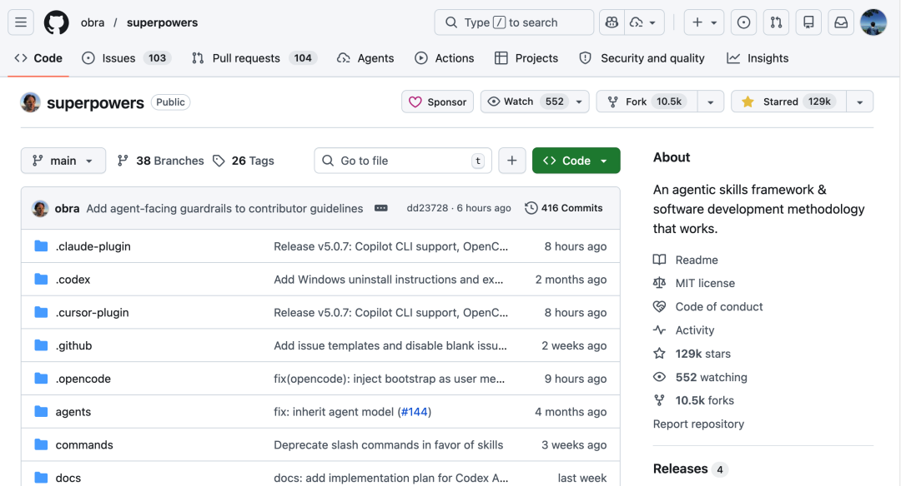
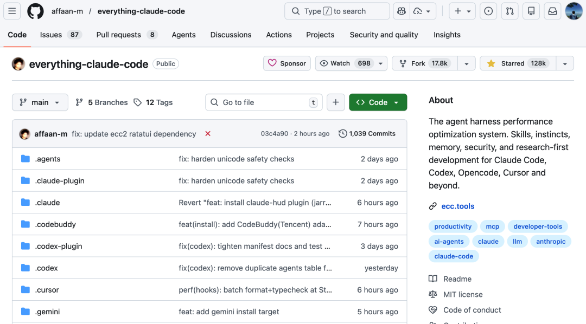
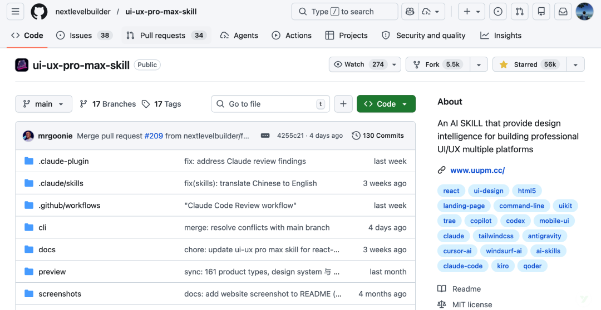
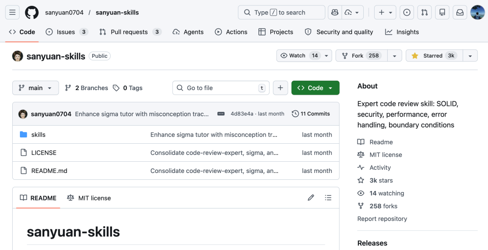
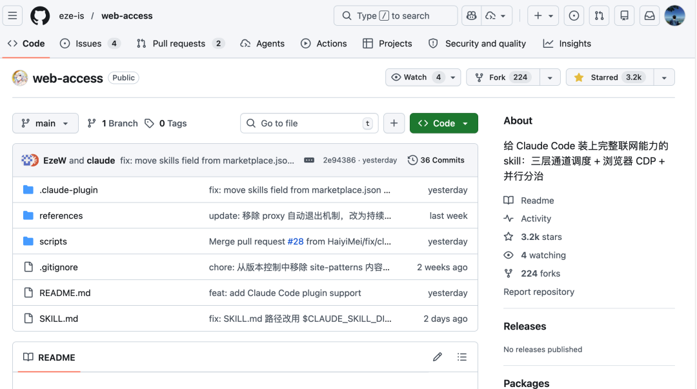
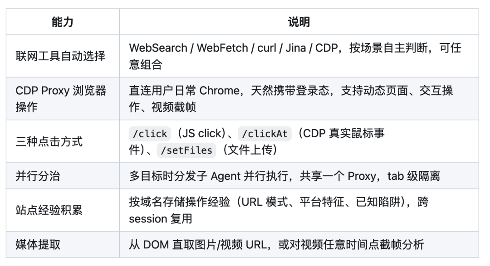
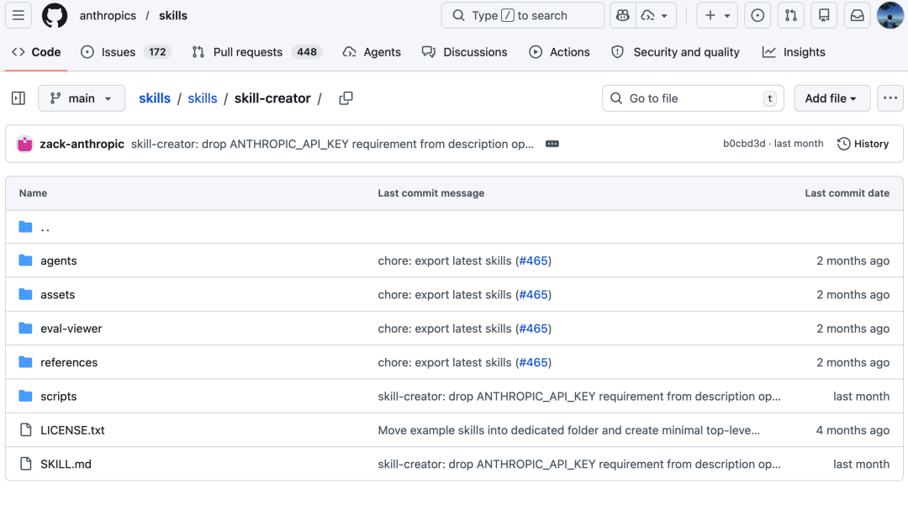

之前写了篇万字详解 Agent Skills，聊了 Skills 是什么、怎么用、和 Prompt / MCP 有什么区别。
这篇不聊概念，直接分享 6 个我日常在用的 Skills，覆盖开发流程、代码审查、UI 设计、网页操作这些场景。
让 AI 自动遵循 TDD 流程，先写测试再写实现 一键生成符合行业标准的设计系统 对代码进行多维度专业审查（SOLID、安全性、性能） 解决 AI 聊太久会“失忆”的上下文腐化问题 给 AI 加上完整的网页浏览和自动化操作能力
下面一个个来看。
Superpowers
Superpowers 是一个专为 AI 编程 Agent（Claude Code、Cursor 等）设计的软件开发工作流框架，把 TDD、Code Review、Spec-Driven、Git Worktree、子 Agent 协作等实践封装成 Skills。

内置的核心技能如下：
| brainstorming | /superpowers:brainstorm | |
| using-git-worktrees | ||
| writing-plans | ||
| executing-plans | ||
| test-driven-development | ||
| subagent-driven-development | ||
| code-review | ||
| systematic-debugging | ||
| verification-before-completion |
这些技能不是孤立存在的，它们会串联成一条完整的工作流。
目前 Superpowers 支持 Claude Code、Cursor、Codex、OpenCode 等主流 AI 编码平台，安装后即可自动启用。这里以 Claude Code 为例说明。
如果你本机没有安装 Claude Code 的话，只需要运行下面这行命令安装即可（Node.js 18+）：
npm install -g @anthropic-ai/claude-code
在 Claude Code 中，首先要注册插件市场：
/plugin marketplace add obra/superpowers-marketplace
然后从这个插件市场安装插件：
/plugin install superpowers@superpowers-marketplace
一共有三个下载选项：

| 选项 | 作用范围 |
|---|---|
| Install for you (user scope) | 全局生效 |
| Install for all collaborators (project scope) | 项目成员共有 |
| Install for you, in this repo only (local scope) | 仅限当前文件夹 |
这里推荐选择 User Scope 全局安装。因为 Superpowers 的“技能”是通用的，无论你写 Java 业务还是 Python 脚本，这套方法论在大多数场景下都能用。全局安装后，你随时都能唤起这些能力，不用每个项目都折腾一遍。
安装完成后，在 Claude Code 中输入 /plugin 或 /plugin list，如果看到 Superpowers 出现在列表中，就说明安装成功了。
项目地址：https://github.com/obra/superpowers
Everything Claude Code
很多人把 Claude Code 当聊天框用。有位开发者在 8 小时内用它做完一个产品，拿了 Anthropic 黑客松冠军。
他把这套配置集开源了出来，在 Github 上已经斩获接近 13w Star：Everything Claude Code。

它把开发流程拆解成多个组件，让 AI 在不同角色间分工协作：
| Agents | |
| Skills | |
| Hooks | |
| Rules | |
| Commands | /tdd 跑测试、/code-review 审查代码 |
在实战测试中，这套方案让功能开发速度提升了 65%。代码审查出的问题减少了 75%，PR 的平均问题数从 12 个降到了 3 个。
但它解决的一个更实际痛点是：上下文腐化。
AI 聊太久会“失忆”，输出质量下降。这套配置让 AI 始终在清晰的角色框架内工作，保持稳定输出。每个 Agent 只负责自己擅长的领域，不会越界；每个 Skill 都有明确的触发条件和执行步骤，不会乱来。
项目地址：https://github.com/affaan-m/everything-claude-code
UI UX Pro Max
这是一个专为 AI 编程 Agent（Claude Code、Cursor、Windsurf 等）设计的专业 UI/UX 设计智能 Skill。
它的核心能力是一键生成完整的设计系统（Design System），根据产品类型和行业特性自动给出设计决策。

v2.0 新增了 Design System Generator，能根据你的产品类型、行业特性、目标用户，在几秒内自动输出一套完整的设计系统。
该技能内置的设计知识库：
| UI 风格 | ||
| 行业色板 | ||
| 字体搭配 | ||
| 推理规则 | ||
| UX 准则 | ||
| 支持技术栈 |
它是如何工作的？
当你输入“帮我做一个美容 SPA 的落地页”时，它不会随便给你一套紫色渐变，而是会推理出：这是健康养生行业 → 推荐柔和的 Soft UI 风格 → 配色用淡粉 + 鼠尾草绿 + 金色点缀 → 字体选优雅的 Cormorant Garamond，同时还会列出该行业应该避免的反模式（比如不要用 AI 感十足的紫粉渐变）。
安装方式非常简单：
Claude Code（推荐）：
/plugin marketplace add nextlevelbuilder/ui-ux-pro-max-skill
/plugin install ui-ux-pro-max@ui-ux-pro-max-skill
Cursor / Windsurf / Continue 等：使用官方 CLI
npm install -g uipro-cli
uipro init --ai claude # 或 cursor、windsurf 等
安装后，只需自然语言描述你的 UI 需求，技能会自动激活：
帮我做一个拼单产品的界面
设计一个股票分析界面
做一个动漫主题的 App
它还会自动生成 Pre-delivery Checklist，确保没有 emoji 当图标、hover 状态完整、reduced-motion 被尊重等专业细节。
项目地址：https://github.com/nextlevelbuilder/ui-ux-pro-max-skill
如果你觉得 UI UX Pro Max 太重，只需要一个轻量的前端设计指导，可以试试 Anthropic 官方的 frontend-design Skill。它专注于避免 AI 生成的“千篇一律”美学——拒绝 Inter/Roboto 等泛滥字体，拒绝紫白渐变这类套路配色，鼓励大胆的排版和非常规布局。没有 UI UX Pro Max 那么完整的设计知识库，但胜在轻量，适合对设计要求不那么复杂的场景。
sanyuan-skills
这是一个面向生产环境的 Claude Code 技能集合，它把资深工程师的代码审查经验封装成 Skill，让 AI 从多个专业维度对代码进行审查。

该集合目前包含三个核心技能：
| Code Review Expert | ||
| Sigma | ||
| Skill Forge |
Code Review Expert 的审查维度：
SOLID 原则：单一职责、开闭原则、里氏替换等 安全性：SQL 注入、XSS、敏感信息泄露等 性能：算法复杂度、内存泄漏、不必要的循环等 错误处理：异常捕获、边界条件、空值处理等 代码质量：命名规范、注释、可读性等
使用 npx 命令安装：
# 安装代码审查专家
npx skills add sanyuan0704/sanyuan-skills --path skills/code-review-expert
# 安装 Sigma 导师
npx skills add sanyuan0704/sanyuan-skills --path skills/sigma
# 安装 Skill Forge
npx skills add sanyuan0704/sanyuan-skills --path skills/skill-forge
安装后，在 Claude Code 中直接调用：
/code-review-expert # 审查当前 git 变更
/sigma <主题> # 启动学习辅导，如 /sigma React Hooks
/skill-forge # 创建新技能
项目地址：https://github.com/sanyuan0704/sanyuan-skills
Web Access
Claude Code 自带 WebSearch 和 WebFetch，但缺少编排策略和浏览器自动化能力。这个 Skill 补上了这块——让 Claude Code 能自主浏览网页、操作动态页面，并且跨会话积累站点经验。并且，支持 Windows / Linux / macOS，自带 DOM 边界穿透能力。


安装方式：
git clone https://github.com/eze-is/web-access ~/.claude/skills/web-access
前提条件：Node.js 22+，Chrome 需开启远程调试（在 chrome://inspect/#remote-debugging 中勾选"Allow remote debugging for this browser instance"）。
安装后可以直接用自然语言驱动：
帮我去小红书搜一下 JavaGuide 相关的信息
同时调研这 6 个产品，给我一个对比总结
项目地址：https://github.com/eze-is/web-access
skill-creator
这是 Anthropic 官方 Skills 仓库中的一个元技能，专门用于创建、修改和优化 Skill。

它提供了一套 Skill 开发工作流：
| 意图捕获 | |
| 起草 SKILL.md | |
| 测试验证 | |
| 迭代优化 | |
| 描述优化 |
它还内置了评估系统：生成可视化评测报告，对比“使用 Skill”和“不使用 Skill”的输出差异，支持多轮迭代优化。
适合想给团队做专属 Skill 的开发者作为起点。
项目地址：https://github.com/anthropics/skills/tree/main/skills/skill-creator
总结
按场景整理一下，方便按需选择：
| 完整开发流程 | ||
| 多角色协作 | ||
| UI 设计 | ||
| 代码审查 | ||
| 网页浏览与操作 | ||
| 自制 Skill |
不需要全装，根据日常场景挑几个就行。刚开始接触的话，建议从 Superpowers 和 sanyuan-skills 入手——前者管开发流程，后者管代码质量，覆盖了最常见的开发需求。

⭐️推荐阅读: